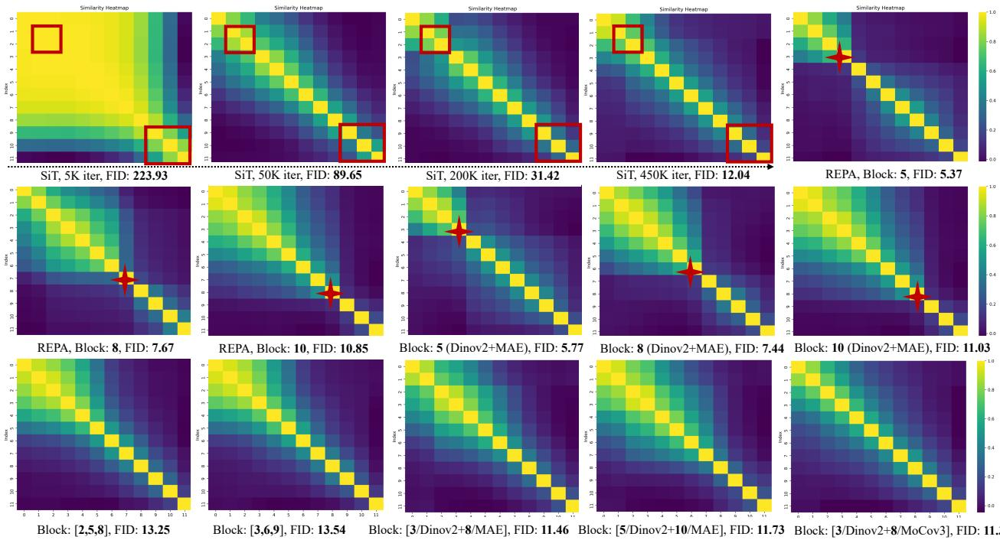
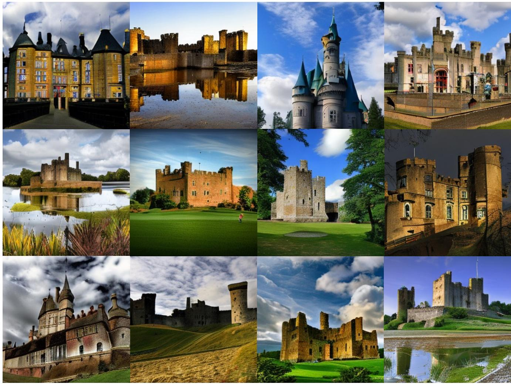

CVPR 2026 accepted · P3 · 2026-06-17
DiverseDiT：DiT/REPA/RAE 正在吸收视觉预训练表征，本篇提供内部多样性角度的状态更新
把 DiT 性能提升解释为 block-wise representation diversity，而不仅是外部 encoder alignment 或更大模型。
编号2603.04239
优先级P3
类别CVPR 2026 accepted
会议arXiv 更新 + CVPR 2026 accepted
方法分析 DiT 内部 representation dynamics，提出 long residual connections 和 representation diversity loss，让不同 blocks 学到更不同的特征。
来源arXiv / OpenReview
先说结论。DiT/REPA/RAE 正在吸收视觉预训练表征，本篇提供内部多样性角度的状态更新。 把 DiT 性能提升解释为 block-wise representation diversity，而不仅是外部 encoder alignment 或更大模型。


核心问题
DiT/REPA/RAE 正在吸收视觉预训练表征，本篇提供内部多样性角度的状态更新。
方法拆解
分析 DiT 内部 representation dynamics，提出 long residual connections 和 representation diversity loss，让不同 blocks 学到更不同的特征。
主要贡献
把 DiT 性能提升解释为 block-wise representation diversity，而不仅是外部 encoder alignment 或更大模型。
实验看点
摘要称 ImageNet 256/512 和 one-step generation 设置中均有收敛加速与性能增益，并与现有 representation learning 技术互补。
局限与读法
今天是 replacement/status update，论文主体不是新发布；与通用识别/分割表征的关系仍间接。